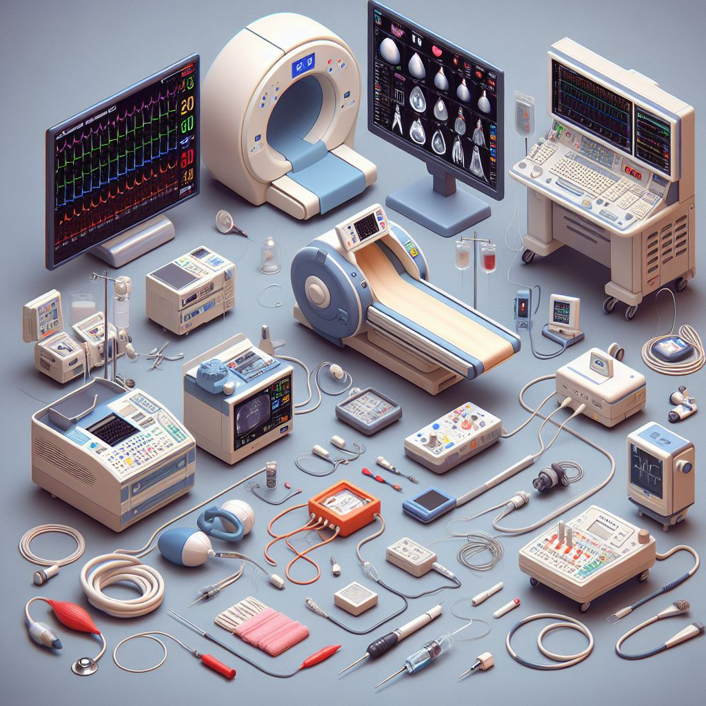

Início
Postagens
Cursos
Institucional
Equipe
Contato
Manutenção de Equipamentos Biomédicos
Um projeto de extensão do IF Sudeste MG - Campus Juiz de Fora
Postagensㅤ ➜ ㅤEquipamentos
Os Principais Equipamentos Biomédicos e Seu Papel na Medicina Moderna

Conheça aqui os principais equipamentos biomédicos e suas funcionaliades